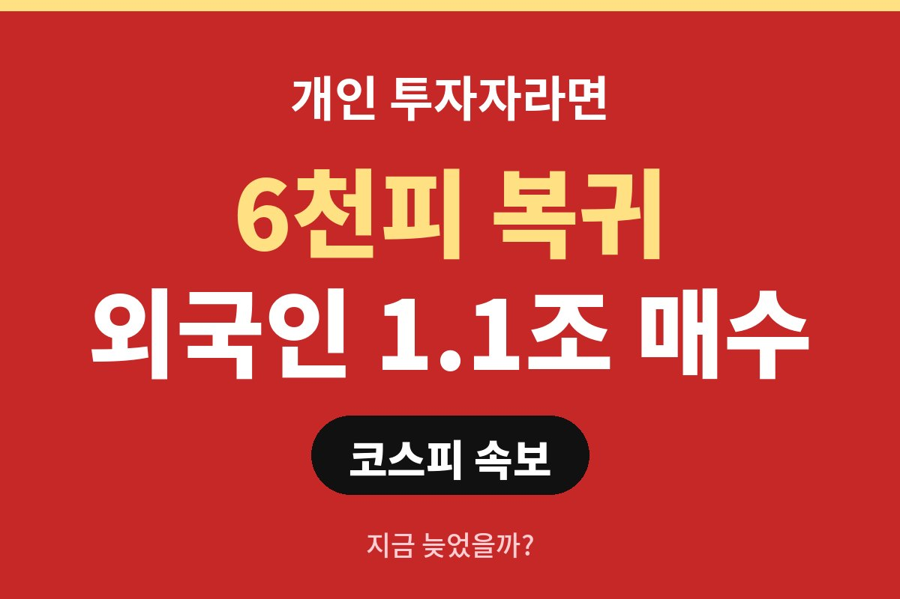
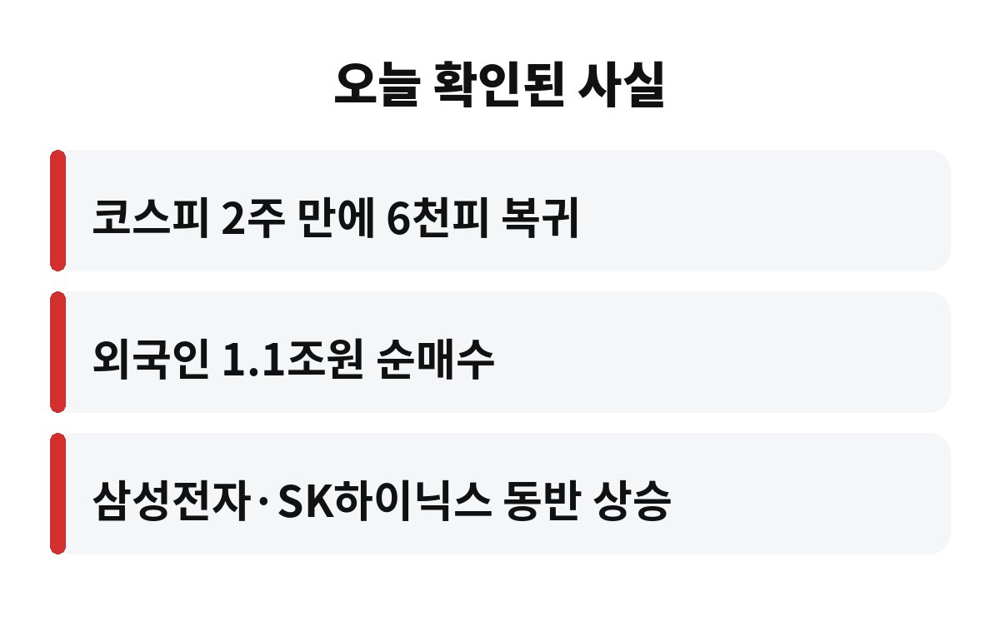
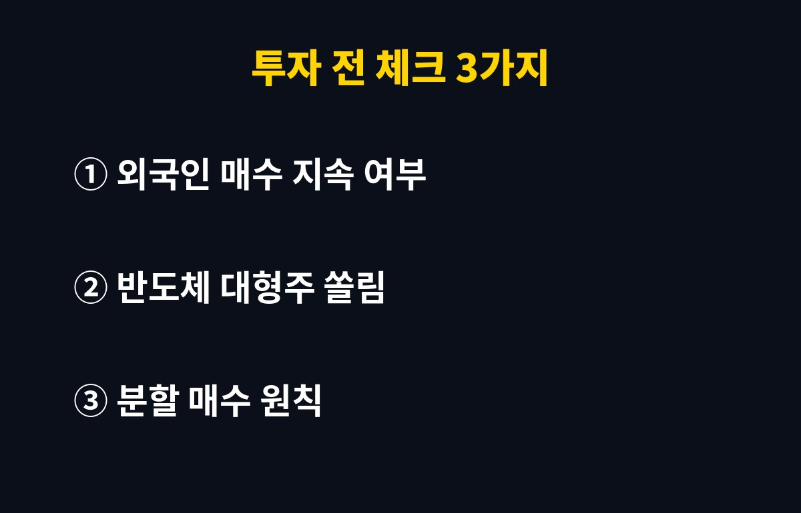

코스피 6000이 2주 만에 다시 돌아왔고, 외국인은 이날 1.1조원어치를 사들였어요. 개인 투자자라면 "이미 늦은 건 아닐까, 지금 들어가도 될까" 이 고민부터 드실 텐데요, 같이 따져 볼게요.
한국경제 보도에 따르면 삼성전자와 SK하이닉스가 나란히 오르면서 지수를 끌어올렸다고 해요. 오늘은 코스피 6000 복귀가 내 계좌에 어떤 의미인지, 어디까지가 확인된 사실이고 어디부터가 예측인지 구분해서 정리해 볼게요.
확인된 사실은 세 가지예요. 첫째, 코스피가 2주 만에 6천피를 되찾았어요. 둘째, 외국인이 약 1.1조원을 순매수했어요. 셋째, 삼성전자와 SK하이닉스, 이른바 삼전닉스가 함께 크게 올랐어요.
여기서 중요한 건 "2주 만에"라는 표현이에요. 한 번 6000선을 내줬다가 다시 올라왔다는 뜻이니까요. 지수가 쉬지 않고 오른 게 아니라 흔들렸다가 회복한 흐름이라는 점은 기억해 두세요.
솔직히 아무도 몰라요. 하루 순매수가 크다고 다음 날도 그럴 거라는 보장은 없거든요. 외국인 자금은 환율, 미국 금리, 반도체 업황 같은 변수에 민감하게 움직이는 편이에요.
그래서 하루 매수 금액 하나만 보고 따라 들어가기보다, 며칠에 걸쳐 매수가 이어지는지 확인하는 편이 안전해요. 한 줄 뉴스 때문에 급하게 사면 "고점에 샀다"는 후회가 따라오기 쉬우니까요.
정답은 없지만 기준은 만들 수 있어요. 아래 표처럼 내 상황에 맞춰 보세요.
| 내 상황 | 생각해 볼 방향 |
| 아직 투자 안 한 분 | 한 번에 말고 여러 번 나눠서 접근 |
| 이미 보유 중인 분 | 목표 비중을 넘지 않았는지 점검 |
| 빚내서 투자하려는 분 | 변동성이 커질 수 있어 신중하게 |

이번 상승을 이끈 게 삼성전자와 SK하이닉스라는 점은 양날의 검이에요. 대형 반도체주가 잘 나갈 때는 지수가 시원하게 오르지만, 반대로 이 두 종목이 흔들리면 지수 전체가 같이 흔들릴 수 있거든요.
내 포트폴리오가 반도체 한쪽에 몰려 있지는 않은지 한번 열어 보세요. 지수가 올랐다는 기쁨에 취해 비중 점검을 미루면, 나중에 하락장에서 "그때 정리할걸" 하고 후회하게 될 수 있어요.

정리하면, 코스피 6000 복귀와 외국인 1.1조원 매수는 분명 좋은 신호예요. 다만 신호는 신호일 뿐, 내 투자 원칙을 대신해 주지는 않아요. 여러분은 지금 6천피, 어떻게 보세요? 댓글로 의견 남겨 주세요. 이런 경제 이야기가 도움이 되셨다면 구독도 부탁드려요.
※ 본 글은 투자 권유가 아니며, 투자 판단과 책임은 본인에게 있습니다.